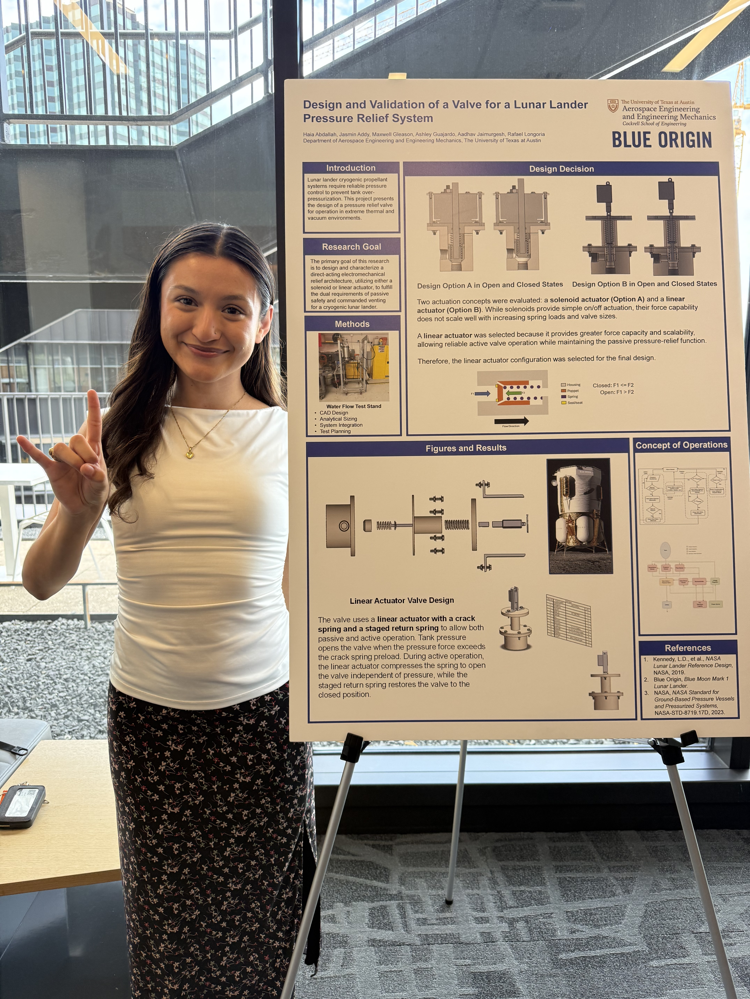

UT AUSTIN · AEROSPACE ENGINEERING · SENIOR DESIGN
Lunar Lander Pressure Relief Valve
Blue Origin–Sponsored Senior Design Project
Fluids Lead
Fluid Systems · Valve Selection · Testing
Completed
Project Overview
As part of a Blue Origin-sponsored senior design project at the University of Texas at Austin, our team investigated a pressure relief valve concept for a lunar lander application.
As Fluids Lead, I contributed to fluid-system requirements, valve and actuator trade studies, and experimental characterization using a water-flow test stand.
Project Documentation
Additional CAD models, engineering analysis, testing results, and project documentation will be added soon.
Project Presentation
Presenting our Blue Origin-sponsored senior design project at the University of Texas at Austin.
